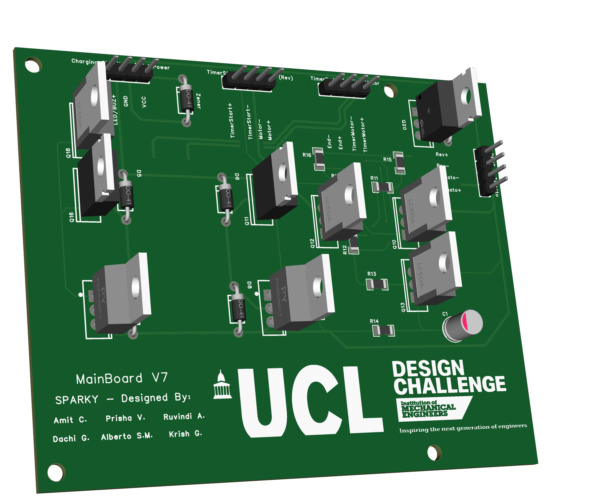
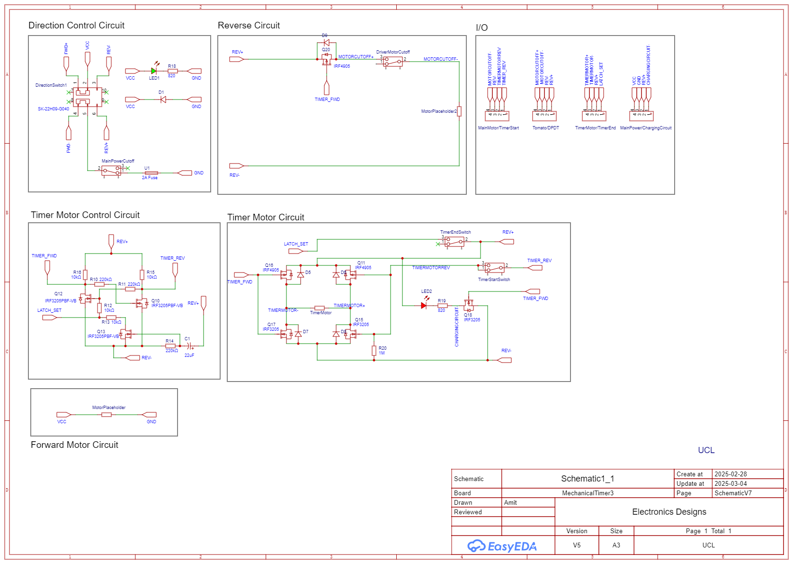

Analog Robotic Device
IMechE Design Challenge (2025) — Autonomous robotic device with a custom PCB and generatively designed chassis. Featuring an electronics solution with no microcontroller, all logic is derived from the hardware components.

01The Brief
The brief for this challenge was strictly defined, which is very different from the open nature of many of my other project briefs. This gave me a much clearer understanding of how to design a product to very strict requirements. The specifics of the regulations are detailed in the PDFs below. However, the core aspect of the challenge was to develop a robotic device that could move perfectly linearly, from a start point, to a variable distance target, then return to exactly where it started. This had to be achieved without any programmable logic.
02Design Philosophy
One of the core aspects of our design philosophy was to create a sleek, easily assembleable and most importantly, a reusable design. Out of all of my projects, this was the one which involved the most iterative testing. Electronics were iterated and changed dozens of times, even navigating through last minute regulation changes. The design would follow a very organic process. With wiring, placement and mechanical design all seamlessly confluencing.
Testing for electronics followed the general process of breadboarding, verifying results, verifying compatibility with mechanism, and finally PCB production and assembly. Use of JST connectors were prioritised over soldering to allow for easy component replacement and testing.
03Technical Depth & Achievements
Produced a fully functional design scoring 99/100 in the final competition. The design was the most unique out of all 45 teams present, being the only one to feature a custom PCB and automatic timer reset.
05PCB & Simulation Media
